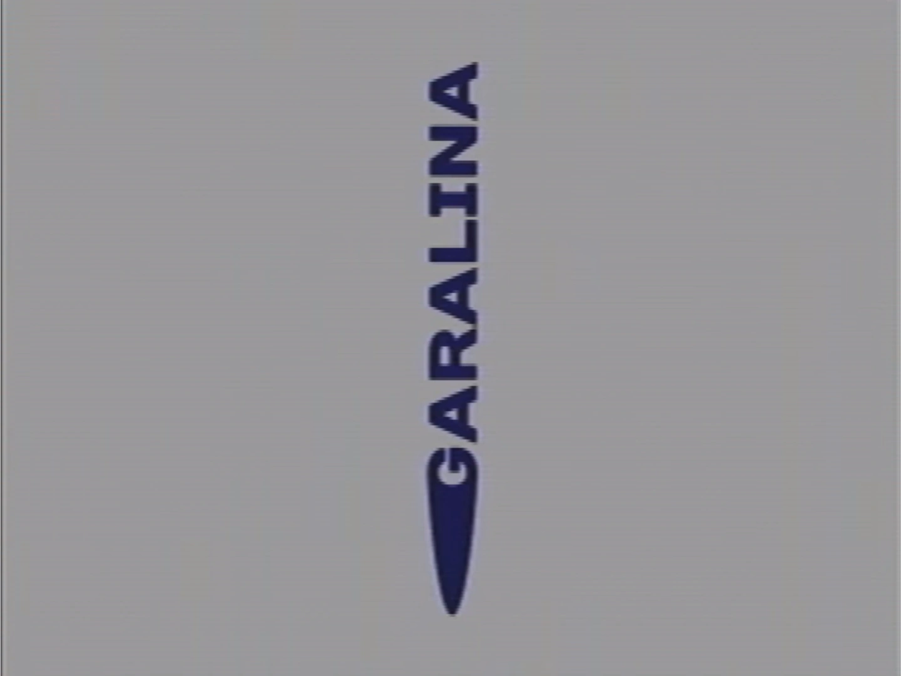

Garalina
This article is about a topic that has no widely accepted interpretation or clear details.
{kind=link}

{kind=link}
The Garalina logo
Garalina is a fictional game development company that is accredited for the creation and publication of Petscop. Barely any information is presented to the audience about the company's history, staff, assets, or current status, and it is never directly referred to by either Paul or the game itself. It is not even known for certain what its relevance is to the story of Petscop as a whole.
Based on the general information shown so far, Garalina can confidently be based in the United States, and existed sometime during the 1990s. It was either run by, or in close association with Rainer.
The Garalina logo consists of the company's name set against a pale grey background and written in cobalt blue, capital letters in a bold, wide-set font rotated -90° degrees. The "G" in "Garalina" has a thick, solid tail conjoined to its back that extends below the "G" and defines the bottom boundary of the logo.
History
Petscop was developed by Rainer, and the game was licensed in early 1997 under the name and logo of Garalina. These events took place during a brief time when the PlayStation was available in the United States under the company division known as Sony Computer Entertainment of America (SCEA). Sometime in 1997, Sony went through corporate restructure and folded SCEA into SCEI.
Appearances in Petscop
Direct references to Garalina have been rare, as neither Paul nor the game itself ever makes reference to the company.
- In Petscop 1, the opening few seconds shows the logo of Garalina between the PlayStation logo and the game title screen.
- In Petscop 14, the game restarts back to the title screen which activates the "Strange Situation". The logo is rotated 45 degrees.
- At the end of Petscop 14, the website is found on a Tarnacop computer in the game titled "Petscop Discovery Pages". The first page of the website includes both the logos of Garalina and PlayStation.
- At the beginning of Petscop 20, when Marvin's recording is launched, Garalina logo's position is the opposite of its position in Petscop 14.
- In Petscop 23, Garalina's logo is seen in a loading screen when entering the third floor computer room, oriented horizontal with a black background.
- Later in Petscop 23, on the third floor a Garalina logo is seen again hanging above a table in front of the playtesting room. Inside the playtesting room are several Tarnacop machines with the Garalina logo spinning around as a kind of screensaver.
- It can be made out on the monitor in the loading screen after the machine event in Petscop 23.
- It is shown for the Garalina track in the Petscop Soundtrack.
")
")
")
")
{kind=link}
{kind=link}
")
{kind=link}
{kind=link}
Story
It is possible that the starting text in Petscop 1 reflects the end of the company: "The Gift Plane has closed indefinitely, and all personnel have left".
Rainer is cited as the creator of Petscop, so by transitivity he must have either been an employee or owner of Garalina. With the development of new consoles and rapidly-evolving computer technology in the early 1990s, many hundreds of game development companies were created ad hoc; therefore, it wouldn't be unusual for Garalina to have been founded around that same time. As Petscop was made specifically for the PlayStation console, it might suggest some sort of association with Sony, but it is also possible Rainer acquired a development kit independently.
Garalina may have had a phone number, as a phone number is displayed in the Burn-in Monitor during Petscop 16. The number is censored out, but does reveal the area code of the number as 203. This may also suggest that Garalina was based in southern Connecticut, where the area code is located. However, there is no explanation or direct connection between the alert message in Petscop 16 and Garalina.
Website
Garalina may have had a company website, as the note that came with the game mentions "please go to my website on the sticker". In Petscop 14, Paul finds a computer in the game that displays a series of images from a website called "Petscop Discovery Pages", which also shows the Garalina logo and PlayStation logo.
In the late 1990s, known as the Dot-com bubble, it was extremely popular and convenient for software-focused companies to popularize their own websites. As this period was also during the phase known as Web 1.0, websites typically had no special interactivity, and only served as an art-piece of HTML coding. This closely matches what is seen on the Petscop Discovery Pages in Petscop 14, as the website has only texts and embedded images with artistic variations of font and color.
Tony Domenico, the developer behind the Petscop series, has stated the Petscop Discovery Pages files do exist, but were never released for the series.[1]
Name
The name Garalina has no certain etymology, and no such word exists in any known language.
There may be a connection between the name "Garalina" and Lina Leskowitz, particularly the "lina" part. The "gara" part could also refer to the garage - the garage's name is truncated as "house-gara" within Room Impulse.
Connection to Nifty
- Main article: Tony Domenico#Nifty
Another game-development company called Garalina appears in the game Nifty. Nifty was created by Tony Domenico (AKA "Mr. Yes"), who was also the sole developer behind Petscop. Domenico released Nifty in August 2007, almost ten years before the Petscop channel was created. The original release can be found on the Thompd website along with Domenico's other works.
The lore of Nifty consists of a meta-narrative, which claims that Garalina originally released a game called Nift late in the year 2000. After a disaster took place in which players of Nift would commit suicide, Garalina quickly recalled all copies of the game, and went bankrupt within a couple of months. As the player progresses through puzzles in the game, text files are created which are written as press releases from Garalina.
Of particular note is the timing of these events with respect to the actions of Rainer in Petscop. The About page mentions that Rainer gave Petscop to the family on Christmas of 2000, and this same event is visually depicted at the House in Petscop 11. Rainer is never mentioned again at any point after this event.
Tony Domenico has officially stated that Nifty is not at all canon to Petscop[2].